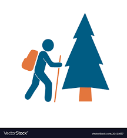

I am an aspiring front-end web developer. I am passionate about building eye-catching websites and having communications with people through these web pages. I am familiar with HTML, CSS, and JavaScript. Currently, I am working on using these programming languages to build websites for my profile and for my friend's restaurant fo which I will pick up some backend developer skills soon.
Data science is my other passion. I conduct data analytics with human-centered design and convey positive social impacts of my data analysis. I have four years of experience in quantitative psychological research, primarily in social psychology and health psychology. Besides, I have one year of experience in data science. I work primarily with R and at times Python and MySQL. This month, I will be working on the 2021 Shopee data analytics and data science competition.
When I am not crunching my back and staring at my laptop, I like to and 
 Ting-Yun Chiu
Ting-Yun Chiu